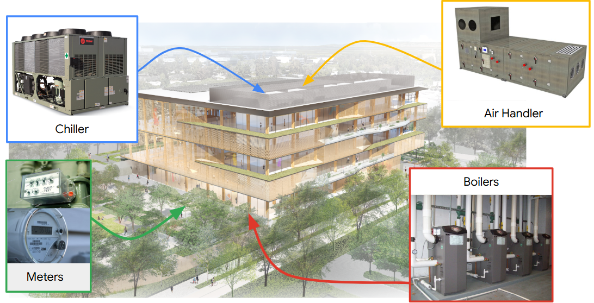
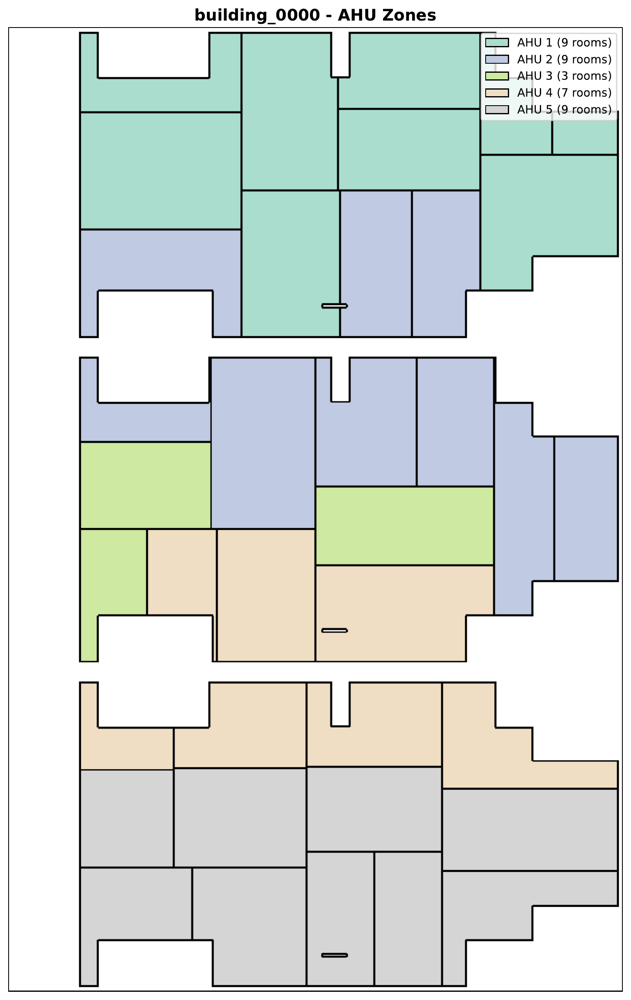
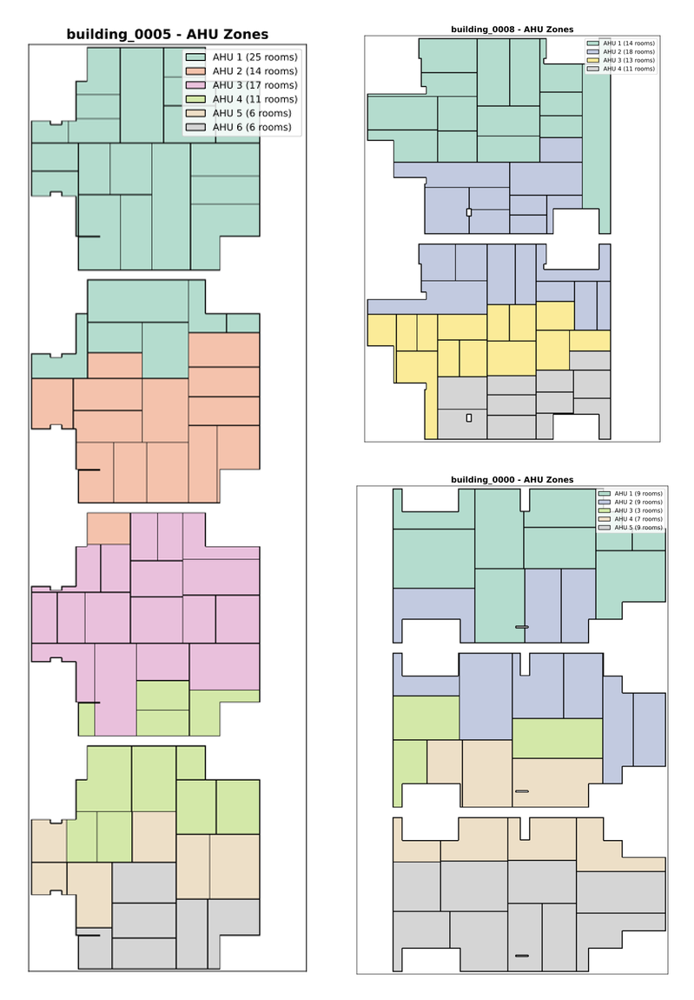
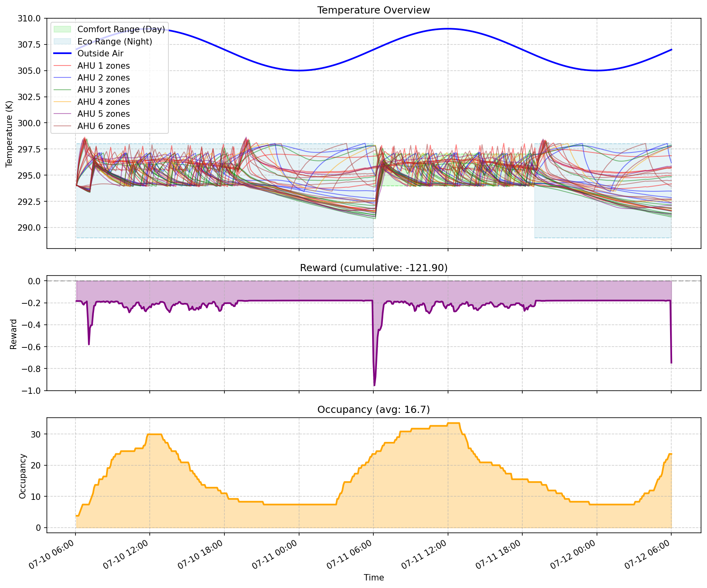

Competition description
One policy, operating the HVAC systems of commercial buildings across a range of layouts and weather, jointly minimizing energy cost and carbon while keeping occupants comfortable.
Overview
Participants develop a single control policy that operates the HVAC systems of commercial buildings across a range of layouts and weather conditions. The policy decides when to run each air handler and the hot-water pump, and sets their temperature and pressure setpoints, to jointly minimize energy cost and carbon emissions while maintaining occupant comfort.
The objective is deliberately not to tune a controller for one building. It is to learn one policy that generalizes across arbitrary floor plans, HVAC topologies, and weather. The same policy is deployed, unchanged, on buildings it has never encountered, differing in number of floors, geometry, room layout, zoning, equipment count, and climate. The policy must infer an effective strategy from the building description and live sensor stream it is given at runtime.
This portability across the entire distribution of buildings, rather than competence on a single instance, is the defining requirement of a building foundation model and the central scientific challenge of the competition.
At each control step, a five-minute interval over a one-day episode, the policy observes the building state and must simultaneously issue:
Because the number of AHUs and zones differs from building to building, both the observation and action vectors change shape per building, and there is no fixed input or output mapping the policy can memorize. This hybrid, variable-dimensional action space, combined with the requirement to generalize to unseen buildings, makes the problem substantially harder than standard fixed-dimension RL benchmarks.
Building components
Changing one AHU's setpoint affects multiple zones; occupancy in one zone shifts the thermal load across the building.
Central systems that heat and cool air and distribute it via ducts. A building may have 3 to 8 AHUs serving different zones.
Terminal units in each zone that modulate airflow and mix conditioned air with recirculated room air, balancing comfort without running an AHU at full capacity.
A central boiler and pump supplying heated water to AHU coils and zone terminals. The policy sets boiler setpoint and pump pressure to regulate heating capacity.
Individual rooms with independent temperature sensors and occupancy schedules. A building may contain 5 to 50 zones depending on size and layout.

Buildings differ not only in equipment counts but in how equipment maps to physical space. Each AHU serves a distinct group of rooms, and this mapping is unique to every building.


Observation & action spaces
Both spaces are determined by the floor plan, chiefly the number of zones and AHUs, and are not fixed across the competition.
Each observation's length scales with the building (it grows with zones and air handlers). It encodes:
Optionally, the policy may also consume the static floor plan and the AHU-to-zone mapping, supplied through the building metadata at runtime.
The action is a hybrid, variable-dimensional dictionary. For a building with K AHUs:
(K+1), one on/off bit per AHU plus the Hot Water System;(2K+2), two setpoints per AHU plus two for the HWS, each normalized to \([-1, 1]\).These vary widely because the generator samples a broad configuration space: 2 to 4 floors; a 400 to 700 ft × 300 to 500 ft footprint; composite layouts; 30 to 60 ft rooms; 3 to 8 AHUs; and 1 to 2 occupants per zone. With 5 to 50 resulting zones, the discrete space spans 4 to 9 bits and the continuous space 8 to 18 values.
Development building_0000 (Figure 2), with 5 AHUs and 37 rooms, has a 6-bit discrete action space and a 12-value continuous action space.
Reward function
At each step the policy receives a reward combining three competing, normalized quantities.
The comfort term \(\delta_t\) equals 0 when occupied zones are perfectly comfortable and approaches −1 as comfort degrades, so higher is better. Energy cost \(c_t\) and carbon \(e_t\) enter as costs. The organizer-fixed weights are identical for every submission and sum to one, making the reward a weighted average:
This makes comfort dominant while still charging materially for energy and carbon, and it creates the central tradeoff. Conditioning aggressively keeps comfort near its best value but drives energy and carbon high; switching equipment off eliminates energy and carbon but pushes comfort toward −1 whenever zones are occupied. Because comfort is scored only in occupied zones, the reward favors forward-looking, occupancy-aware control: precondition spaces before people arrive, then relax toward an energy-saving band once they leave.
